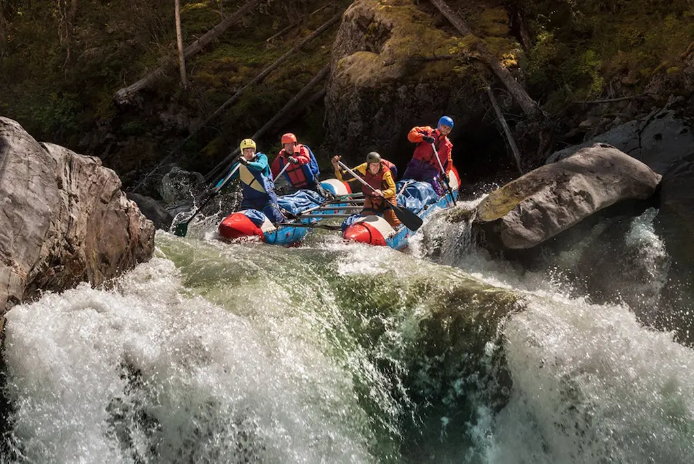

Nossa missão é proporcionar experiências de rafting inesquecíveis, combinando aventura, emoção e diversão com segurança e respeito à natureza, criando momentos especiais que ficarão na memória de cada participante!


Nossa missão é proporcionar experiências de rafting inesquecíveis, combinando aventura, emoção e diversão com segurança e respeito à natureza, criando momentos especiais que ficarão na memória de cada participante!
A Apuã Adventures nasceu às margens do Rio Paranhana, na exuberante Serra Gaúcha, do sonho de um grupo de amigos apaixonados por rios, natureza e adrenalina. Inspirados pela força das águas e pela herança dos povos indígenas que fazem parte da história da nossa terra, escolhemos o nome Apuã para representar nossas raízes e nosso espírito aventureiro. O que começou como uma paixão logo se transformou em uma missão: compartilhar a emoção do rafting e proporcionar experiências inesquecíveis a todos que desejam explorar a natureza e superar seus limites!